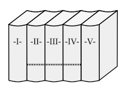

AÇ KİTAP KURDU
Bir kitap kurdu çok acıkmıştı. Karnını doyurmak için kitaplığa çıktı. Raftaki beş ciltlik bir ansiklopedinin birinci cildinin ön kapağından başlayıp beşinci cildin arka kapağına kadar kemirdi. Her cilt 3 cm kalınlıkta olduğuna göre, kitap kurdu ne kadar ilerlemiştir?
Cevap:
Cevap 15 cm değil. Birinci cildinin ön kapağı ile beşinci cildin arka kapağı arasındaki mesafe şekilde noktalı çizgi ile gösterildiği gibidir; yani 9 cm’dir.
